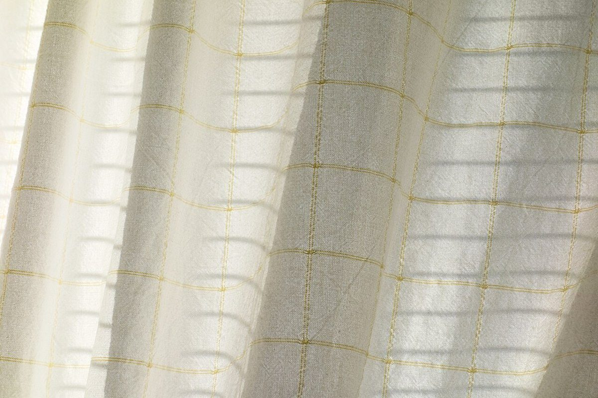

2人
店のこと
店のこと
お店について確認できているのは、所在地とInstagramのアカウントだけです。
「想像してみる」の部分は制作側が想像して書いたものです。お店の実際の様子・考え・メニューとは関係がありません。
確認できていること
- 店名は「Peoples」、業種はカフェ
- 所在地は北海道岩見沢市栗沢町万字睦町1-3(〒068-3157)
- 電話番号はなし。連絡はInstagramから
- 営業時間・定休日・メニュー・価格・ご予約・駐車場は準備中

想像してみる
「Peoples」という名前から
由来は分かりません。制作側は、いろいろな人が、それぞれの人数でふらりと立ち寄れる場所かもしれない、と想像しました。ひとりで本を開く日もあれば、ふたりで話し込む日もある。そんな場面を思い浮かべています(実際のお店の姿ではありません)。


住所のこと
万字(まんじ)という地名
所在地の「万字」は岩見沢市栗沢町の地名で、Instagramのアカウント名にも「manji」とあります。ただ、お店がこの地域とどう関わっているかは分かりません。北海道の内陸なので冬は雪が深いのでは、というのも制作側の想像で、未確認です。